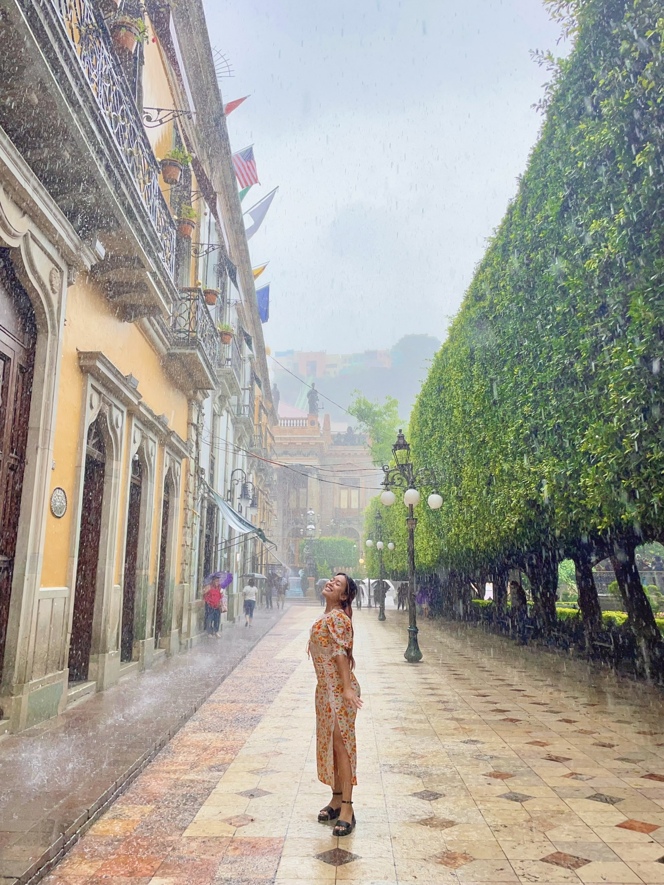
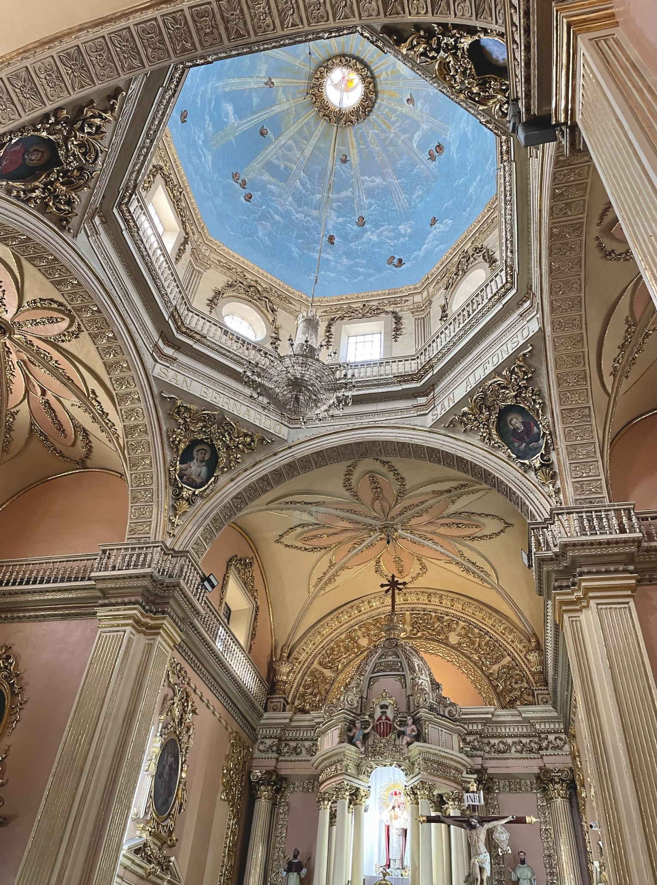
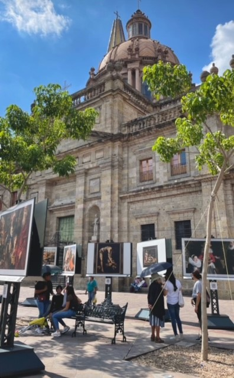
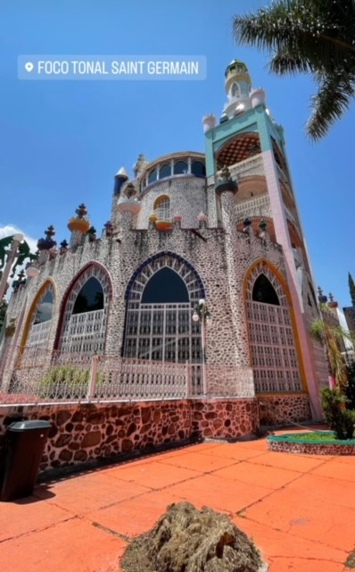
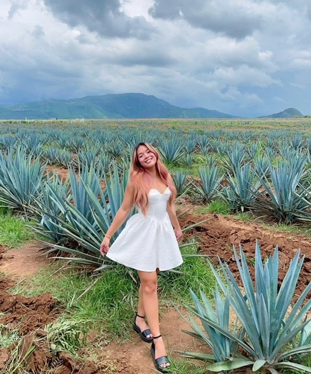
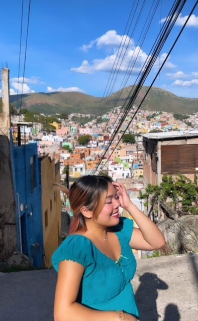
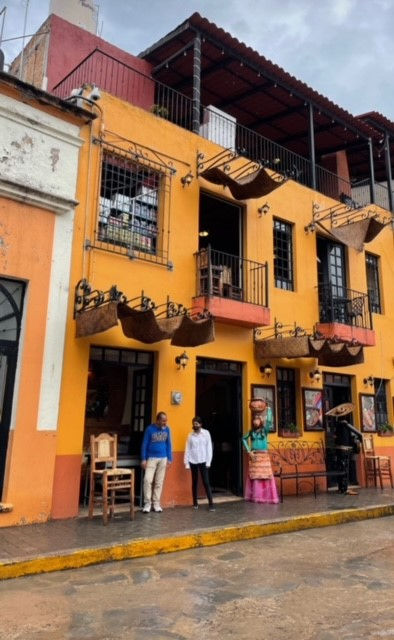
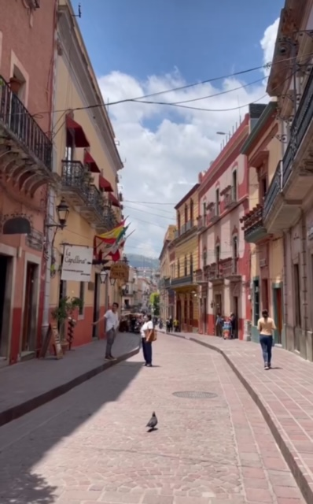
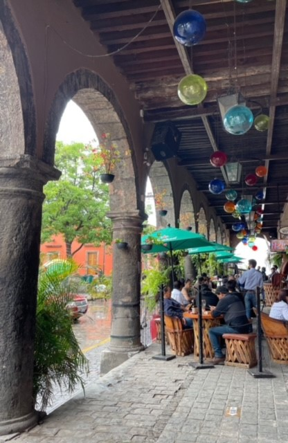
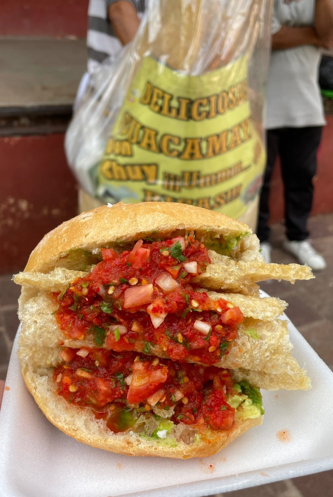
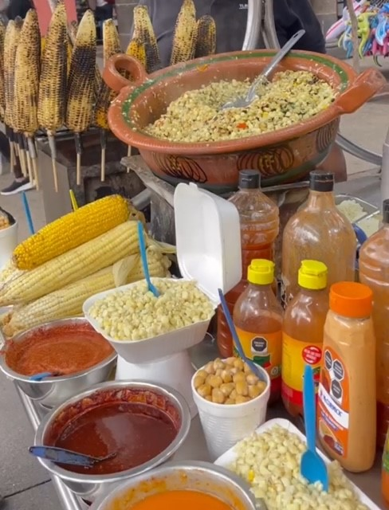
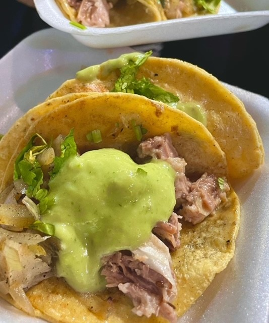
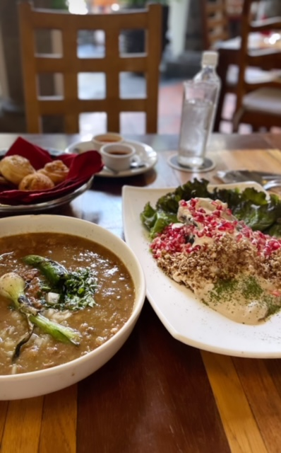
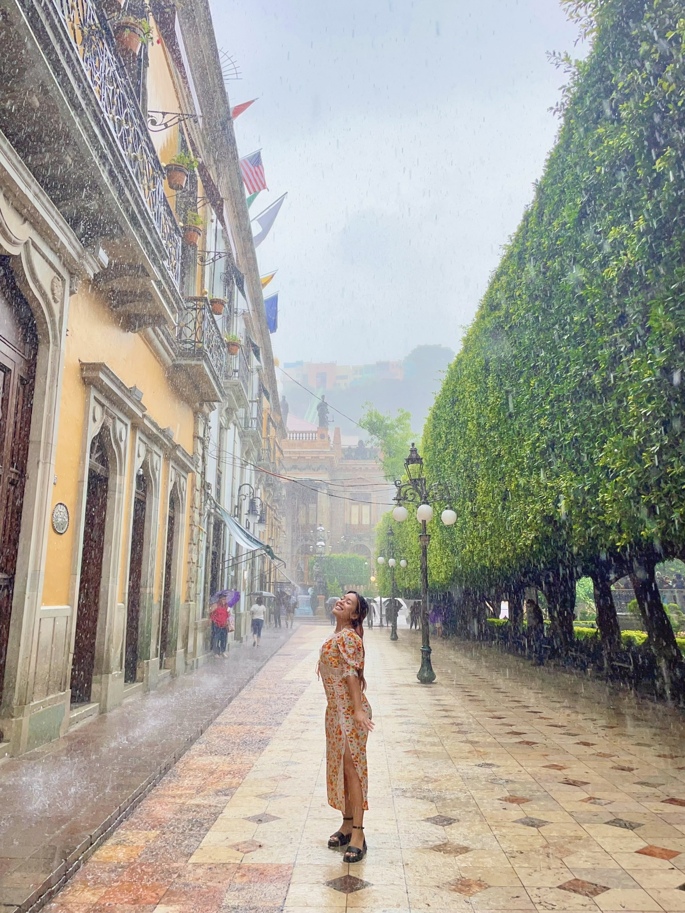
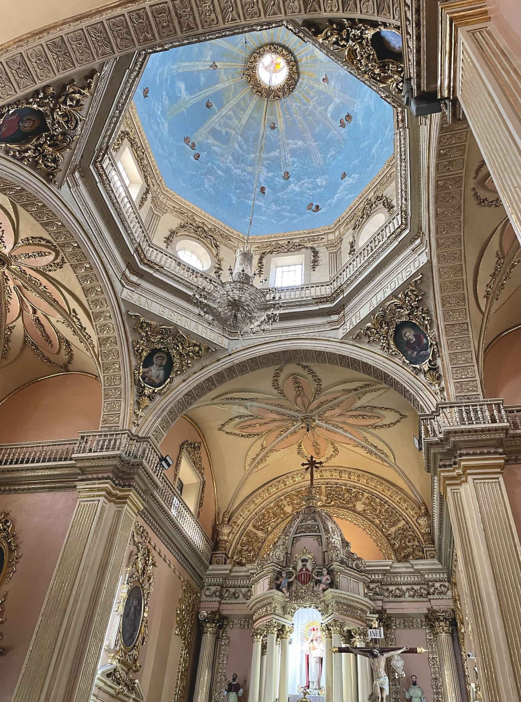
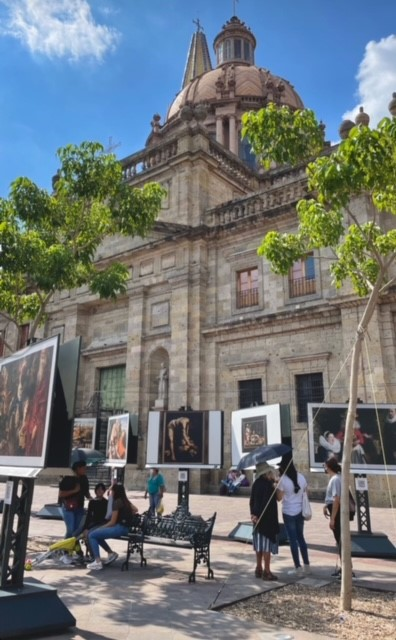
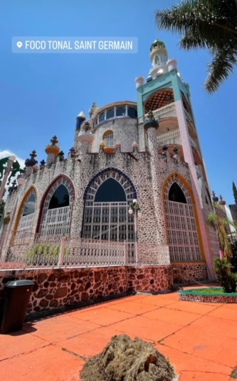
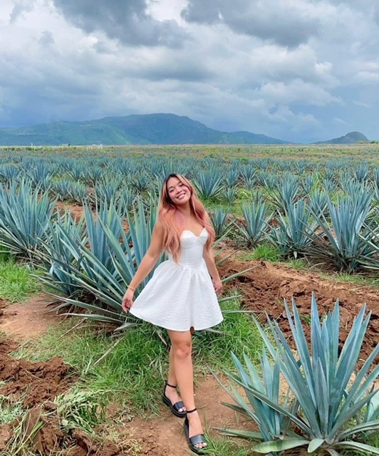
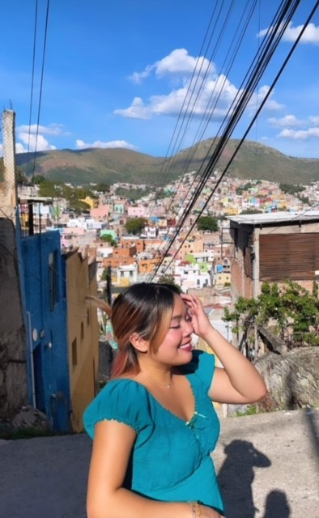
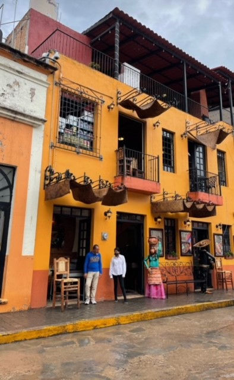
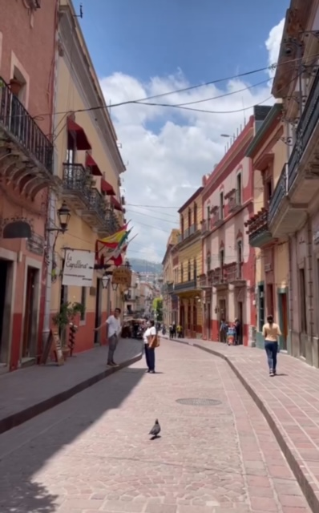
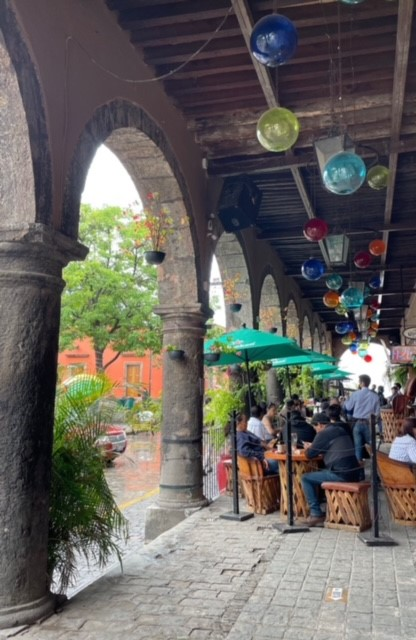
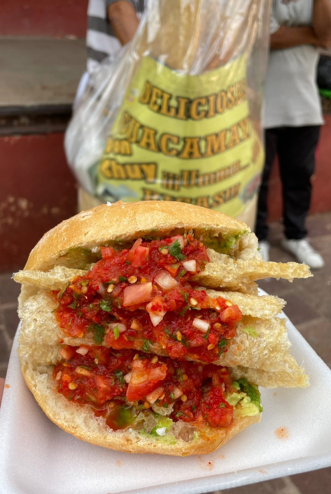
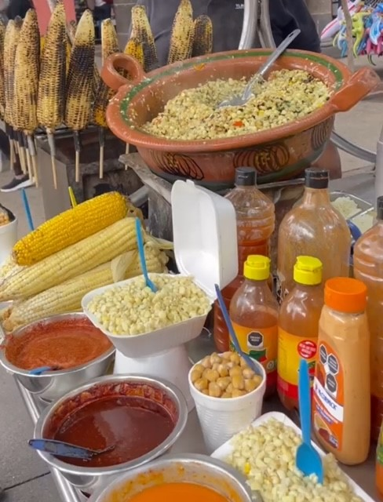
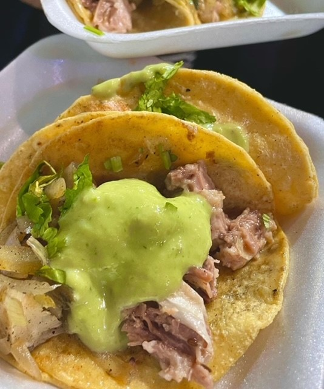
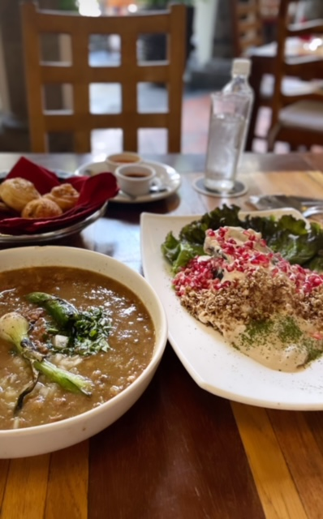
In the heart of Mexico lies two cities that's as romantic as it gets, Guadalajara to Guanajuato. It's a place where love is in the air, and kindness fills the streets. Walking through the cobblestone alleys, you'll find yourself surrounded by big crowds of people from all walks of life, coming together to share cultural food and laughter.
During my time in Guadalajara, I had the chance to visit some incredible places, like Foco Tonal, a spiritual and religious experience that opened my eyes to the local culture. Then making it to Guanajuato, Museo Iconográfico Del Quijote and Museo del Pueblo de Guanajuato offered insights into the city's rich history, while Mercado Hidalgo provided a taste of authentic street food that I'll never forget.
But the best part of Guanajuato? The people. They're so bright and happy, always ready to welcome you with open arms and share their love for their city. Whether you're exploring the Regional Museum of Guanajuato Alhóndiga de Granaditas or simply strolling through the streets, you'll feel the warmth and hospitality that make this city so special.
In Guanajuato, every moment feels like a dream, filled with romance, laughter, and unforgettable experiences. It's a place that will capture your heart and leave you longing to return again and again.
 }})